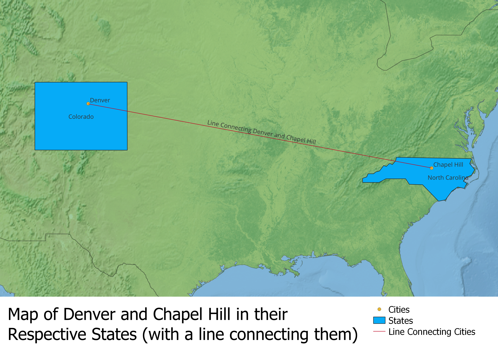

My map
This map incorporates a raster layer and vector layer from Natural Earth, as well as polygon, line, and point vector layers digitized by me.

Data used for this project
Raster background layer (Natural Earth I with Shaded Relief and Water)
Vector background layer (Countries)